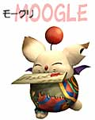
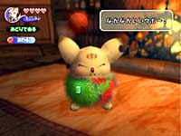
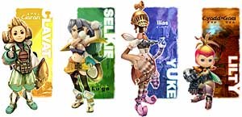
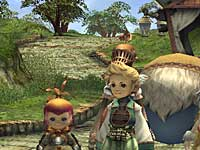

N.O.M モーグリをシングルモードのパートナーにしたのはどうしてでしょう。
青木 最初は人間をパートナーにしようという話があったんですが、もうひとりを闘わせるというなら、多人数プレイでパーティーにしちゃえばいいって話になって。ひとりが闘って、もうひとりはクリスタルケージを持ってついてきてくれればいいなと。それなら人間よりモーグリの方がイメージ的に合うんじゃないかということだったんです。さすがにひとりでクリスタルを持ち上げて、闘いながら移動するのは大変なので。そういう意味で、従者がつくならモーグリがいいんじゃないかと。
N.O.M モーグリは、いるだけではないんですよね。
青木 そうですね、闘ったりもしてくれますし。ボディペインティングひとつで、いろいろと効果が変わったりもするので、試してみると面白いですよ。例えばシングルモードのときに、GBAを２Pの所に差すとレーダーになるんですが、モーグリのペイント次第でなにが出るか変わりますし。ダンジョンに入るときも、色の塗り方や毛の刈り方によって、ちょっとしたことが変わってくるんですよ。
N.O.M 選択できるキャラクターの種類はたくさんありますが、いわゆる突出した個性というものは見られませんね。
板鼻 どのキャラが飛び抜けているということがないように、全てが並列であるように作ったんですよ。それはユーザーが自分に合った形で選べるように、ということなんです。
青木 今回は隣にプレイヤーがいるので、キャラに個性をつけたとしても、それを操っている人は顔なじみじゃないですか。いくらしおらしい女の子を演じていたとしても、横を見たらキャラとギャップがあるかもしれないし(笑)。そういうことを考えると、"キャラの個性＝プレイヤーの個性"であった方が感情移入できやすいかなと。
N.O.M キャラクター作成でいちばん気を遣った点はどこですか？
板鼻 従来のFFのように、ひとりひとりのキャラの個性が立っていて…という形ではなくて、"村の青年団が立ち上がって救いに行く"という素朴な感じで、４種族が平均的に並びつつも、チビやのっぽ、いろいろなタイプがいるというような感じにするバランスで面白さを出したくて、初めの頃はかなり悩みました。
N.O.M 各種族の特徴を、見た目で出さねばいけないわけですよね。
板鼻 ひとつの画面でプレイするのが前提なので、パッと見て違いが分かるようにということで。だから、シルエットには気を遣いましたね。ぜんぶの種族を人間ではないような形にしてもいいかなと思ったんですが、やっぱり人間っぽいのがいないと、ちょっと入り込みづらいだろうということで。でも「これが主人公で、あとはその他」みたいな形にはならないように対等な感じに見えるようにはしました。
青木 キャラクターの大きさなんかも、こういう感じの方が出しやすいだろう、というのを基準に作っています。あの等身がいちばん表現しやすいんですね。
板鼻 アクションしているときに、このくらいのデフォルメだとオーバーアクションしても違和感がないし、映えるんです。
N.O.M グラフィックがとてもきれいで、GCの美点を大きく引き出していると思うんですが。
板鼻 絵はかなり細かく作り込みました。背景に関しても、ギリギリまで細かくチェックしたんですよ。これ以上やってたらROMが間に合わない、って怒られそうなくらいに(笑)。GCならではの新しい表現の仕方を見て欲しいですね。水の美しい流れとか、建物なんかの素材感がよく出てると思います。テクスチャを描くときに、服装から建造物まで「これは何の質感で、素材で出来ているのか」と聞かれても、答えられないものはなくそうということで作っていたんです。土台は何で出来てるとか、そういった所まで。その辺のこだわりが出て、こういう形になってるんですよ。 |